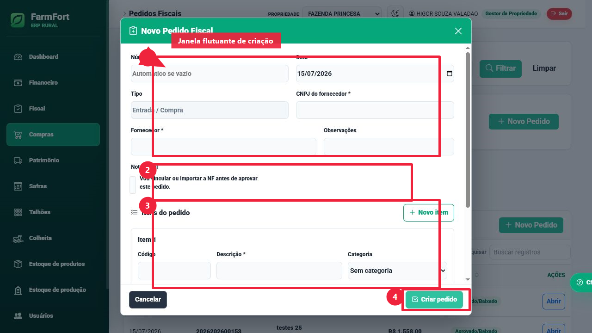

1. Dados principais
Informe número, data, tipo, fornecedor, CNPJ e observações do pedido.
2. Pedido com NF
Se já existir NF, marque a opção para vincular ou importar antes de aprovar.
3. Itens
Inclua categoria, unidade, quantidade, valor unitário e total de cada item.
4. Criar pedido
Ao criar, o sistema decide se aprova automaticamente ou fica aguardando gestor.